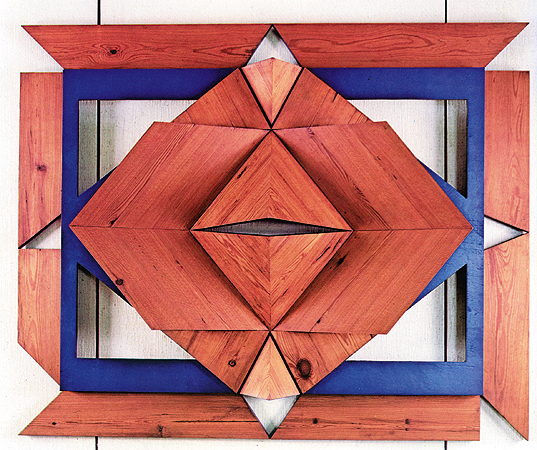

A obra “Máscara” é uma construção geometrizada em madeira (pinho-de-riga). Em seu centro, observa-se uma fenda no formato de losango com características muito semelhantes aos olhos das máscaras do povo Tchokwe, originário de Angola, e das máscaras Gueledé, do povo Iorubá. É importante lembrar que a geometrização é uma característica dos grafismos de vários povos africanos.
Tipo de arte: Abstrata